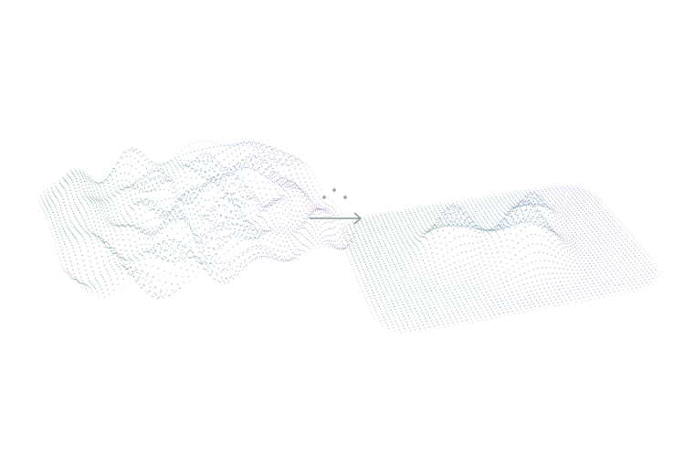
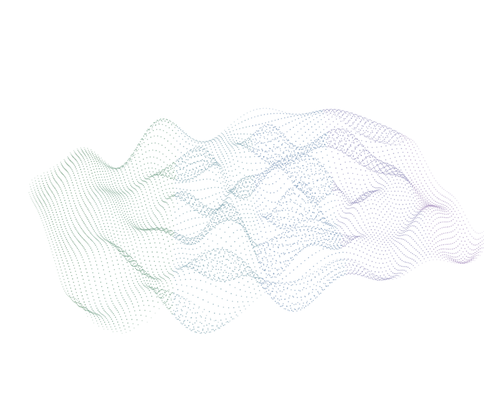

Nonlinear Latent Decoding for Inverse Scattering
Under review
Predicting nonlinear latent coordinates instead of a spatial grid to improve inverse-scattering reconstructions across neural-operator architectures.

Computer Science · University of Maryland
I’m a CS PhD student at the University of Maryland, advised by Haizhao Yang. My research focuses on machine learning for inverse problems, especially inverse PDEs.
I’m interested in making scientific computing more efficient in data, parameters, and compute, including through curriculum learning and agentic workflows.
I’m also a full-time Machine Learning Engineer at Scale AI, and previously an AI Software Engineer at Argon ST.

An illustrative point-cloud wavefield. Selecting Recovered medium gathers the same particles into a blue-scale contrast map. Eight surrounding emitters send pulsed wavefronts inward. This is a conceptual animation, not measured reconstruction data.
Under review
Predicting nonlinear latent coordinates instead of a spatial grid to improve inverse-scattering reconstructions across neural-operator architectures.

Master’s thesis · University of Maryland
Foundations of motivic homotopy theory, with expanded and corrected proofs of key results involving synthetic spectra.
Before computer science, I was a Mathematics PhD student at UMD (2022–2024), working in motivic homotopy theory. I moved to Computer Science in 2025. My master’s thesis grew out of that time in mathematics.